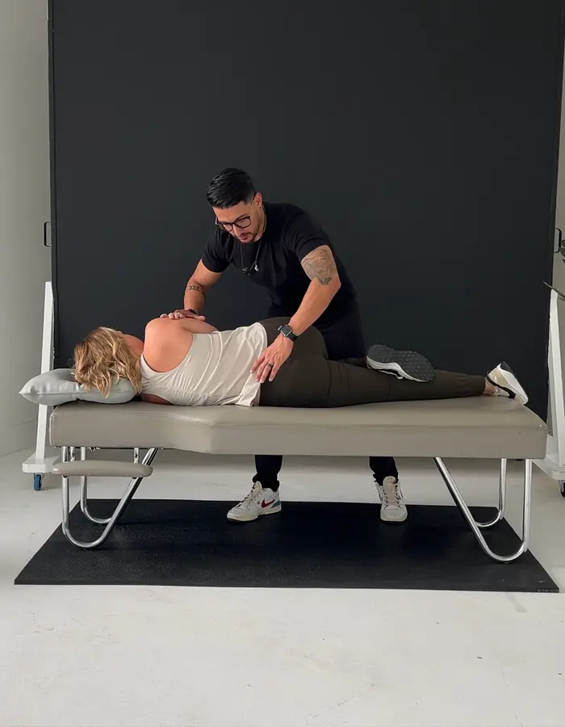
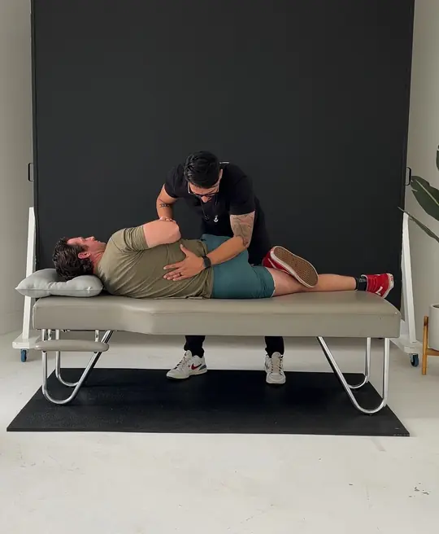
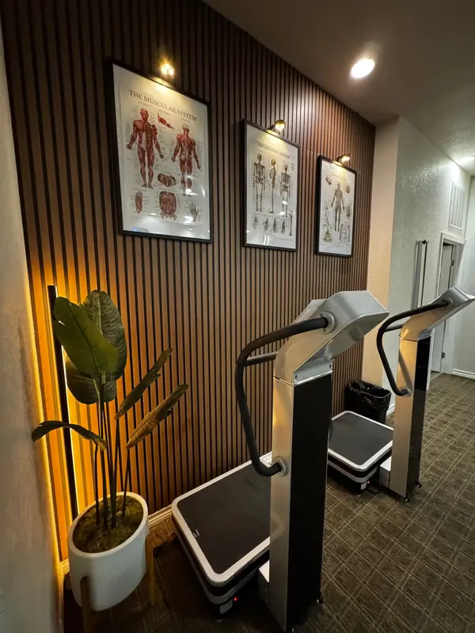
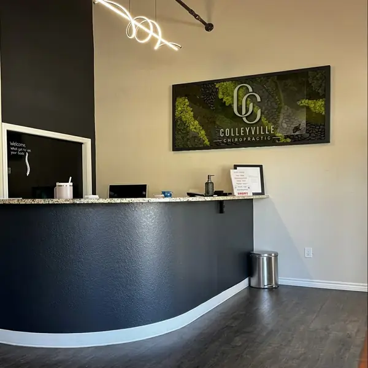
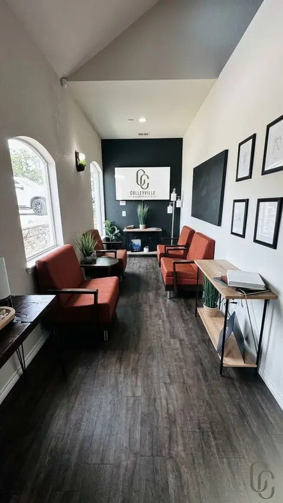

Alivio del dolor
Atención quiropráctica y terapia manual para calmar el dolor y ponerlo en movimiento.
Colleyville, TX · Quiropráctica · Rehabilitación · Ondas de choque
Atención quiropráctica, rehabilitación y terapia de ondas de choque personalizadas en Colleyville, TX, para que se mueva mejor, se recupere de una lesión y vuelva a hacer lo que le gusta. Atención completa en español.
Reseñas de pacientes
Calificación de 5.0 en 80 reseñas de Google de pacientes de Colleyville y alrededores. Las reseñas aparecen en su idioma original. Leer todas las reseñas
"Doctor is extremely compassionate. Explains everything so well."
Trisha M., reseña en Google
"Excellent intake appointment."
John S., reseña en Google
"Excellent service."
Rahila V., reseña en Google
Nuestros servicios
La mayoría de los planes combinan dos o tres de estos. Su primera visita nos dice cuáles necesita de verdad. Ver los 15 servicios (en inglés)

Atención quiropráctica y terapia manual para calmar el dolor y ponerlo en movimiento.

Rehabilitación y ondas de choque para la lesión que no mejora, con un plan para que vuelva a lo suyo.

Masaje y terapias de recuperación para sentirse bien entre visitas y mantenerse así.
A quién atendemos
Cuidando a Colleyville desde 1999
Niños, padres, atletas, futuras mamás y abuelos. Sea quien sea y venga por lo que venga, está en el lugar correcto.
Encuentre su cita
Elija la opción más cercana y llegará a la cita correcta. ¿No está seguro? Reserve una visita de paciente nuevo y lo resolvemos juntos.
Rigidez, ciática, dolores de cabeza o dolor que sigue regresando.
Reservar quiroprácticaFascitis plantar, codo de tenista, dolor de hombro o rodilla que no mejora.
Reservar ondas de choqueArdor, piquetes o pérdida de sensación en los pies o las manos.
Reservar consulta NeuroPathVolver a entrenar, levantar pesas o jugar después de una lesión.
Reservar rehabilitaciónMasaje de tejido profundo, sueco y de recuperación con nuestra terapeuta con licencia.
Reservar masajeReserve su próxima visita o administre una cita.
Reservar una visita
Conozca a su quiropráctico
El Dr. Rudy sirvió 10 años en servicio activo en la Guardia Costera de EE. UU. y luego obtuvo su licenciatura y su Doctorado en Quiropráctica en Parker University en Dallas. En 2023 tomó las riendas de Colleyville Chiropractic, una clínica que cuida a esta comunidad desde 1999.
Su enfoque es sencillo: encontrar de dónde viene realmente su dolor, calmarlo y luego construir la fuerza para que no regrese. Elige las técnicas según la persona, desde ajustes suaves con instrumento hasta trabajo manual y rehabilitación guiada, y atiende a sus pacientes en español y en inglés.
"El movimiento es medicina. Su cuerpo está hecho para ser resistente. Nuestro trabajo es darle el camino."
Para empezar
Cuente con aproximadamente una hora. Saldrá sabiendo qué está pasando, qué le recomendamos y cuánto cuesta, sin ninguna presión.
Elija un horario en menos de un minuto, o llámenos o escríbanos. Use ropa cómoda para moverse.
Revisamos su historial y sus metas, y hacemos un examen ortopédico, neurológico y de movimiento.
Le explicamos en palabras sencillas lo que encontramos, lo que recomendamos y cuánto cuesta. Si la quiropráctica no es lo indicado, se lo diremos.
Cuando es apropiado, recibe tratamiento el mismo día y se va con un plan sencillo para casa.
Lo que hacemos en la clínica es solo una parte. El resto de su semana importa más.
En la clínica: ajustes, tratamiento y rehabilitación guiada. La chispa que pone todo en marcha.
Fuera de ella: el sueño, el estrés, el movimiento diario y el plan sencillo que le damos para casa. Ahí es donde el cambio se queda.
Precios + seguro
Estamos dentro de la red de Blue Cross Blue Shield de Texas y revisamos sus beneficios antes de su visita. ¿Paga usted mismo? Esto es lo que cuesta.
Consulta, examen y su primer tratamiento cuando sea apropiado.
Visitas a menor precio, visitas incluidas y terapias de recuperación.
Comparar membresíasAceptamos HSA y FSA. Financiamiento con CareCredit y Cherry. Ver todos los precios
Preguntas
Respuestas rápidas a lo que más nos preguntan antes de la primera visita.
Todas las preguntas (en inglés)Hablamos de su historial y de lo que quiere volver a hacer, y luego hacemos un examen ortopédico, neurológico y de movimiento. Le explicamos lo que encontramos en palabras sencillas y lo que recomendamos. Cuando es apropiado, recibe su primer tratamiento el mismo día. Cuente con aproximadamente una hora.
Los pacientes nuevos pueden empezar con nuestra oferta de $47. El examen estándar de paciente nuevo cuesta $120. Si usa Blue Cross Blue Shield de Texas, primero verificamos sus beneficios.
Sí. Estamos dentro de la red de Blue Cross Blue Shield de Texas. Verificamos sus beneficios antes de su visita para que sepa qué esperar. Para otros planes, llámenos y le explicamos sus opciones.
No. Puede reservar directamente en línea o llamando o escribiendo al (817) 420-7696.
Sí. El Dr. Rudy y nuestro equipo atienden en español. Llame o escriba al (817) 420-7696 para reservar en español.
La mayoría de las personas sienten alivio, no dolor. Es normal sentir un poco de molestia de 6 a 24 horas, como después de hacer ejercicio. Si prefiere evitar el chasquido, usamos opciones más suaves como el instrumento Activator o una mesa de caída.
Ubicación + horario
| Lunes | 9 a. m. a 6 p. m. |
|---|---|
| Martes | 2 p. m. a 6 p. m. |
| Miércoles | 9 a. m. a 6 p. m. |
| Jueves | Con cita |
| Viernes | Cerrado |
| Sábado | 9 a. m. a 12 p. m. |
| Domingo | Cerrado |
Nos visitan pacientes de Colleyville, Southlake, Keller, Grapevine, Hurst, Euless, Bedford y North Richland Hills. Reservar en línea toma un minuto, y los sábados por la mañana son ideales si no puede venir entre semana.


Reserve su primera visita de $47 en línea en un minuto, o llame o escriba al (817) 420-7696. Le atendemos en español.
RESET lleva nuestros programas de rehabilitación y entrenamiento a internet, en español, para que siga el mismo enfoque desde cualquier lugar.